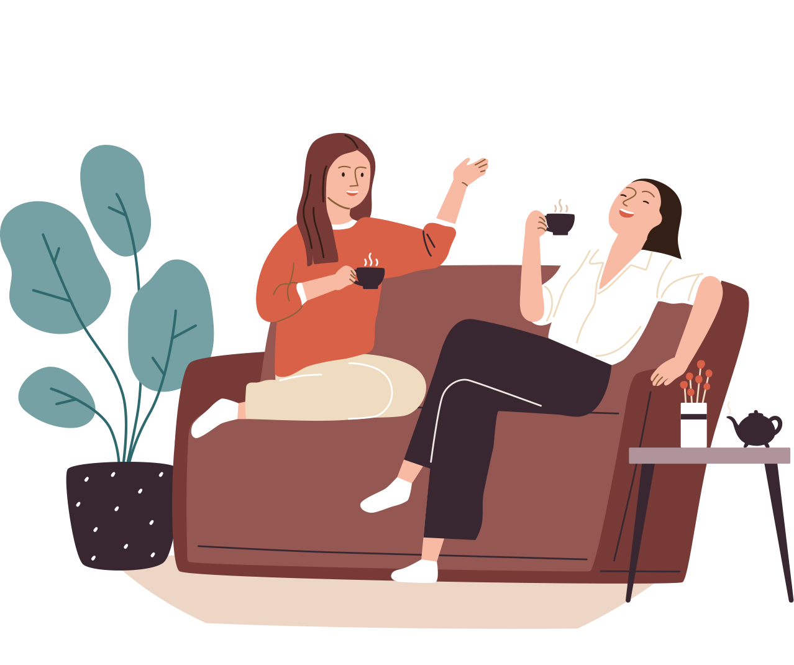
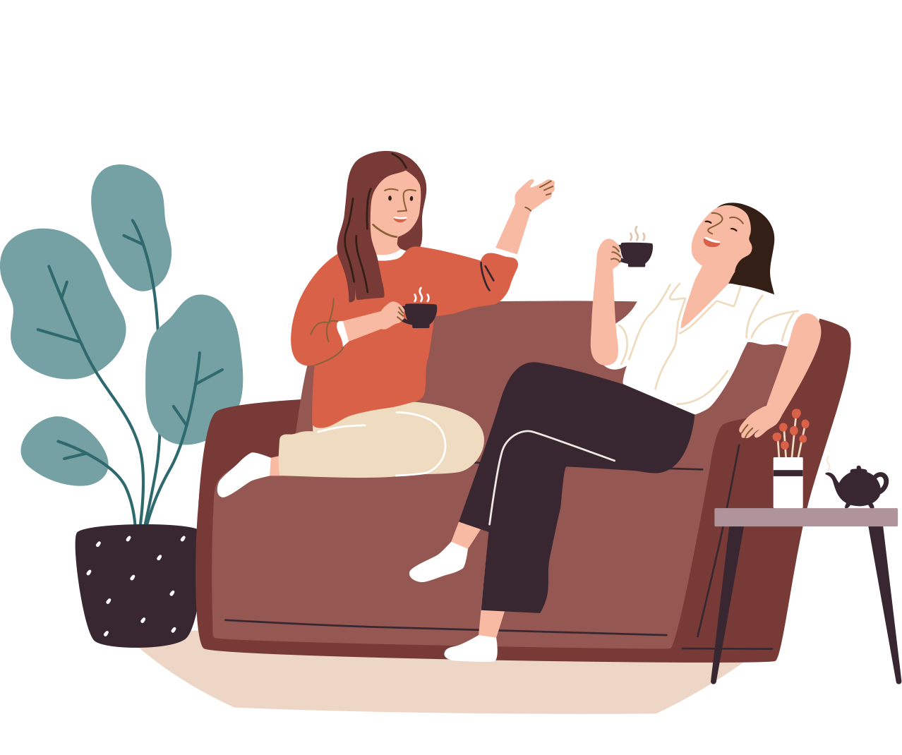

update=3 Siapa yang pernah kena tipu? Kalau kalian lagi baca ini, pasti angkat tangan semua deh. Yap, bener! Hampir semua orang pasti pernah kena tipu. Nah, yang membedakan tipuan tersebut hanya skala besar atau kecilnya saja.
Kalau skala kecil, paling kamu ditipu teman dekat yang punya tujuan untuk candaan. Kalau skala besar, tipuan itu bisa bertujuan untuk kejahatan. Seraaam!
Tapi kalau kamu “hobi” banget kena tipu,
mungkin karena kamu punya karakter ini!
Si Drama Queen
Wah, kalau karakter ini sih udah jelas. Buat si drama queen ini, gampang banget kena tipunya! Dia akan merasa tersanjung saat dipuji oleh orang lain. Makanya, banyak yang nipu dia dengan cara memuji. Duh, kasian!
Si Drama Queen
Wah, kalau karakter ini sih udah jelas. Buat si drama queen ini, gampang banget kena tipunya! Dia akan merasa tersanjung saat dipuji oleh orang lain. Makanya, banyak yang nipu dia dengan cara memuji. Duh, kasian!
Si Plin-Plan
Kalau kamu ingat, kita diajarkan oleh orangtua buat jadi anak yang tegas dan pemberani. Soalnya, orang lain bakalan segan sama orang-orang yang punya pendirian dan tegas. Jadi, kalau kamu orang yang plin-plan, kamu mudah jadi sasaran si tukang tipu.
Si Tukang Ngadu
Orang yang hobi banget ngaduin rahasia orang juga jadi sasaran empuk si penipu. Soalnya, dia mudah terpancing emosi sehingga para penipu dapat dengan mudah membuatnya membocorkan rahasia.

Si Tukang Ngadu
Orang yang hobi banget ngaduin rahasia orang juga jadi sasaran empuk si penipu. Soalnya, dia mudah terpancing emosi sehingga para penipu dapat dengan mudah membuatnya membocorkan rahasia..
Si Cerewet
Orang yang cerewet cenderung ngomong cepet. Nah, kalau dia udah mulai ngomong cepet tanpa berpikir apa yang diomongin, bisa-bisa dia membahas sesuatu yang sangat rahasia. Inilah kenapa mereka yang cerewet mudah banget kena tipu.
Si Tukang Keceplosan
Karakter yang paling bahaya di antara karakter lainnya adalah si tukang keceplosan. Seakan ngomong nggak ada remnya, orang-orang yang demen keceplosan ini jadi incaran para penipu.
Penipu ini nggak perlu mengeluarkan effort yang besar untuk mencari tahu rahasia kamu. Tinggal dikasih umpan sedikit, eh langsung dilahap deh!
 

Si Tukang Keceplosan
Karakter yang paling bahaya di antara karakter lainnya adalah si tukang keceplosan. Seakan ngomong nggak ada remnya, orang-orang yang demen keceplosan ini jadi incaran para penipu.
Penipu ini nggak perlu mengeluarkan effort yang besar untuk mencari tahu rahasia kamu. Tinggal dikasih umpan sedikit, eh langsung dilahap deh!
Rahasia yang sering banget dibeberkan oleh si tukang keceplosan adalah rahasia PIN, CVV, dan OTP. Wah, ini bahaya banget!
PIN, CVV, dan OTP ini nggak boleh kamu beritahu ke siapa pun termasuk pegawai bank sekalipun. Jadi, kalau ada orang yang mengatasnamakan Bank BCA atau lembaga manapun yang menanyakan ketiga hal tersebut, jangan mudah percaya ya. Soalnya, Bank BCA nggak akan memintamu untuk memberitahu ketiga hal “keramat” itu.
Apa sih PIN, CVV, dan OTP?
Nah, supaya nggak mudah ditipu...
Klik di siniIngat, jaga kerahasiaan PIN, CVV, dan OTP seketat kamu jagain dia ya! Ups!